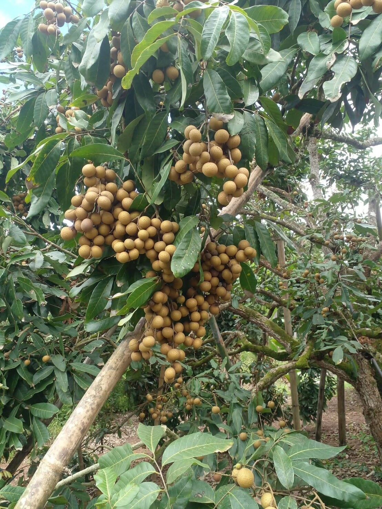

จากผู้นำเข้า สู่ผู้ส่งออกFrom importer to exporter
เราไม่ได้เริ่มจากศูนย์ — ห้องเย็น รถห้องเย็น และความรู้เรื่องเอกสารพิธีการ เรามีอยู่แล้วจากฝั่งนำเข้า สิ่งที่เพิ่มเข้ามาคือโรงคัดของเราเองที่ลำพูนWe did not start from nothing. The cold room, the refrigerated truck and the customs paperwork were already ours from the import side. What we added is our own packing shed in Lamphun.
จุดเริ่มต้นWhere we come from
ธุรกิจเล็ก ที่ทำเองเห็นเองทุกขั้นA small business that still touches every crate
อัลฟ่า เฟรช เริ่มจากการนำเข้าผลไม้เข้ามาขายในประเทศ งานนั้นสอนเราสองเรื่อง — ผลไม้เสียตรงไหนของห่วงโซ่ และผู้ซื้อปลายทางหงุดหงิดกับอะไร เราเลยรู้ว่าเวลาส่งออก อะไรคือสิ่งที่ต้องไม่พลาดAlpha Fresh began by importing fruit for the domestic market. That work taught us two things — where in the chain fruit actually spoils, and what buyers get frustrated about. So we know what must not slip when the fruit goes the other way.
ทุกวันนี้เราเป็นโรงคัดขนาดเล็ก ไม่ใช่โรงงานใหญ่ ล็อตของเราไม่มหาศาล แต่นั่นแหละคือเหตุผลที่เรายังตรวจได้ทีละตะกร้า ไม่ใช่สุ่มตรวจToday we are a small sorting shed, not a large factory. Our lots are modest — which is exactly why we can still check crate by crate instead of sampling.
Cold chain พร้อมใช้ — ห้องเย็นและรถห้องเย็นของเราเอง ไม่ต้องรอคิวใครCold chain already in place — our own cold room and refrigerated truck, no queueing for third parties.
เอกสารเราทำเอง — Phyto, C/O, Packing List, Invoice จบในทีมเดียวPaperwork in-house — phytosanitary certificate, C/O, packing list and invoice handled by one team.
เล็กแต่ตรวจได้ทุกลูก — เราคัดด้วยมือ ล็อตไม่ใหญ่ จึงคุมคุณภาพได้จริงSmall enough to check every crate — hand-graded in modest lots, so quality control is real, not a claim.
คุยกับสวนโดยตรง — ไม่ผ่านคนกลางหลายชั้น ราคาและวันตัดจึงตกลงล่วงหน้าได้Direct with the orchards — no chain of middlemen, so price and picking date can be agreed in advance.
สามอย่างที่เราไม่ยกให้ใครทำแทนThree things we do not hand to anyone else
การคัดเกรดGrading
คัดด้วยมือทุกล็อต แยกช่อที่ผลร่วงหรือผิวช้ำออกก่อนลงกล่อง ไม่ใช้สายพานคัดอัตโนมัติ เพราะล็อตเราไม่ใหญ่พอที่จะคุ้ม และมือคนแม่นกว่าในงานขนาดนี้Every lot is graded by hand — loose or bruised clusters pulled before boxing. No automated grading line: our lots are not large enough to justify one, and at this scale hands are more accurate.
ห้องเย็นThe cold room
ผลไม้เข้าห้องเย็นในวันที่ตัด ไม่ค้างคืนกลางแจ้ง อุณหภูมิถูกบันทึกไว้ และถ้าผู้ซื้อขอ เราใส่ data logger ไปในตู้ให้ดูย้อนหลังได้Fruit goes into the cold room on picking day — never left outside overnight. Temperatures are logged, and if the buyer asks we put a data logger in the container.
เอกสารและการโหลดDocuments and loading
ทีมเดิมที่เคยเคลียร์ของขาเข้าเป็นคนทำเอกสารขาออก เราอยู่ตอนโหลดตู้ทุกครั้ง และส่งรูปล็อตให้ผู้ซื้อดูก่อนปิดตู้The same team that used to clear inbound shipments prepares the outbound papers. We are present at every loading, and send lot photos to the buyer before the container is sealed.

สวนพันธมิตรในลำพูนA partner orchard in Lamphun
เครือข่ายสวนOur orchards
20 กว่าสวน ที่เรารู้จักเจ้าของทุกคนTwenty-odd orchards, and we know every owner
เราไม่ได้ซื้อผ่านตลาดกลาง แต่จองผลผลิตกับสวนที่ผ่านมาตรฐาน GAP ล่วงหน้าเป็นฤดู ทำให้ตกลงราคาและวันตัดได้ก่อน และรู้ว่าลำไยแต่ละล็อตมาจากแปลงไหนWe do not buy through the central market. We book the harvest a season ahead with GAP-certified orchards, which lets us fix price and picking date in advance — and know which plot each lot came from.
ในฤดูเราใช้สวนในลำพูน เชียงใหม่ และเชียงราย ส่วนนอกฤดูรับจากสวนราดสารในจันทบุรีIn season we draw from Lamphun, Chiang Mai and Chiang Rai; off-season fruit comes from induced orchards in Chanthaburi.
สนใจสั่งซื้อ หรืออยากได้ราคาก่อน?Ready to order — or just want a price first?
บอกเราสั้น ๆ ว่าต้องการผลไม้อะไร ปริมาณเท่าไร ส่งไปที่ไหน แล้วเราจะตอบกลับพร้อมราคาและกำหนดตัดภายใน 2 วันทำการTell us the fruit, the volume and the destination. You will get a price and a picking schedule back within two working days.